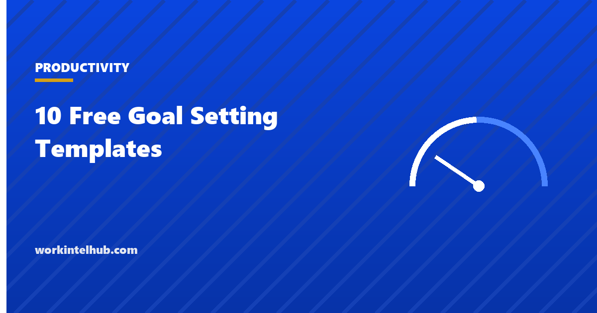

10 Free Goal Setting Templates

Goal setting works when the goal is specific enough to know whether it happened, when progress is reviewed on a schedule, and when the goal is connected to something the person actually wants. The research is consistent on all three: Locke and Latham's decades of work on goal-setting theory found that specific, difficult goals outperform "do your best" goals, and that feedback and commitment decide whether they are reached. Templates cannot supply the commitment; they can supply the specificity and the review.
Ten templates cover the common forms: a SMART goal worksheet, an OKR sheet, annual and quarterly goal plans, a 90-day plan, weekly goals, team goals, career development goals, a habit tracker for the behaviours behind the goals, and a goal review for the end of the period. The Excel version tracks progress against targets and dates; the PDF and Word versions are for people who think better on paper.
Download the templates
Free files: Word, Excel and PDF
Three files, free, no email required. Word to edit, Excel to track, PDF to print or share.
Templates open in Microsoft Word, Excel, Google Docs and Sheets, LibreOffice and any PDF reader. Free to use and adapt for your organisation.
The ten templates
| Template | Horizon | Best for |
|---|---|---|
| SMART goal | Any | One important goal, defined properly |
| OKR | Quarter | Teams and individuals who want ambitious targets with scored key results |
| Annual goals | Year | Life and work areas on one page |
| Quarterly goals | Quarter | Three to five goals with milestones |
| 90-day plan | Quarter | A new role or a single big goal |
| Weekly goals | Week | Turning goals into this week's tasks |
| Team goals | Quarter or year | Shared goals with owners |
| Career goals | One to three years | Development conversations |
| Habit tracker | Month | The daily behaviours behind a goal |
| Goal review | End of period | Learning before the next goal |
Specific and measurable are the two that matter
The SMART acronym is older than most of the people using it and two of its letters do the work. Specific: a goal that names what, who and where. Measurable: a number, a baseline and a way of measuring. Achievable and relevant are judgement calls that prevent silly goals but rarely improve good ones; time-bound is a date, which everyone adds. The worksheet gives each its own box so that "get fitter" becomes "run 5 km without stopping, from a current 2 km, measured on the park loop, by June 30".
OKRs invert the emphasis: the objective is deliberately qualitative and the key results carry the numbers, scored from 0 to 1 at the end of the quarter with 0.7 treated as success. The OKR template covers the method in depth.
Review is where goals succeed or fail
- Weekly: three outcomes, reviewed on Friday in three lines. The weekly sheet is the one most people skip and the one that matters most.
- Monthly: progress against target on the goals sheet; the status column flags behind and overdue.
- Quarterly: the review template, before setting the next goals. What helped and what got in the way are the questions that improve the next quarter.
- Share goals with one person who will ask about them. Commitment is social.
- The time blocking and weekly planner pages turn the weekly goals into a calendar.
Goals are outcomes; habits are inputs
A goal says where to end up; a habit is what happens on Tuesday. Most goals that fail do so because the daily behaviour was never specified. The habit tracker records the input behaviours (write for 30 minutes, make five calls, walk 20 minutes) by day, and the days-done count shows whether the input is happening before the outcome tells you. The employee development plan applies the same logic to career goals inside an organisation.
Key takeaways
- Specific and measurable are the parts of SMART that do the work: what, who, where, a number, a baseline, a date.
- Review weekly, monthly and quarterly; the Friday three-line review is the habit that keeps goals alive.
- Track input habits by day, not just outcomes by quarter.
- Finish each period with the review before setting the next goals.
Frequently asked questions
What is a SMART goal template?
A worksheet with a box for each element: specific (what, who, where), measurable (the number and how it is measured), achievable (why it is realistic), relevant (why it matters now) and time-bound (the date), plus the first action and likely obstacles. The download includes it in PDF, Word and Excel.
What is the difference between goals and OKRs?
A goal is a target with a measure and a date. An OKR separates a qualitative objective from two to four measurable key results, scored from 0 to 1 at the end of a quarter, with 0.7 treated as success. OKRs suit ambitious team targets; SMART goals suit individual commitments.
How many goals should I set?
Three to five for a quarter, one to three for a week. More than that spreads effort and nothing finishes. Annual plans can list a goal per life area, but each quarter should pick a few to focus on.
How often should goals be reviewed?
Weekly for the tasks that serve them, monthly for progress against the target, and at the end of the period for what to learn. Goals reviewed only at the end are wishes.
Why do most goals fail?
The goal was not specific, the daily behaviour behind it was never defined, nobody reviewed it, and no one else knew. The templates address the first three; telling one person who will ask addresses the fourth.